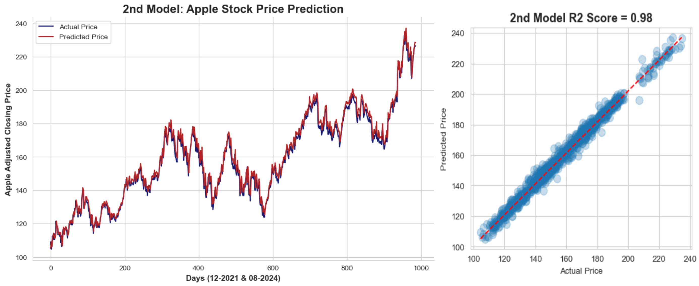

🔮 Predicting Apple Stock via LSTM Neural Networks
The stock market has long been a challenging yet appealing area for research, with data scientists constantly striving to predict stock prices accurately. Advances in machine learning and deep learning have introduced new techniques that make stock price predictions more reliable.
Long Short-Term Memory (LSTM) networks, a recurrent neural network (RNN), have demonstrated their effectiveness in time series forecasting, especially with sequential data such as stock prices. A time series is a series of data points arranged in chronological order.
Stock price movements are affected by numerous factors, so multivariate time series forecasting offers a significant improvement in model accuracy. Incorporating feature engineering based on domain knowledge allows the model better to capture underlying patterns and relationships in the data.
💸 Predicting Google Stock via LSTM Neural Networks

Remarks:
- The predicted stock prices can be compared to actual prices to see how well the model performs.
- Visualizations helps in understanding the accuracy of the predictions over time.
- Multivariate time series forecasting using LSTM is a powerful method for stock price prediction.
- LSTM neural networks offer the ability to capture complex, long-term dependencies in stock market data.
- It is essential to account for the challenges of working with financial data and ensure robust model validation to avoid overfitting.